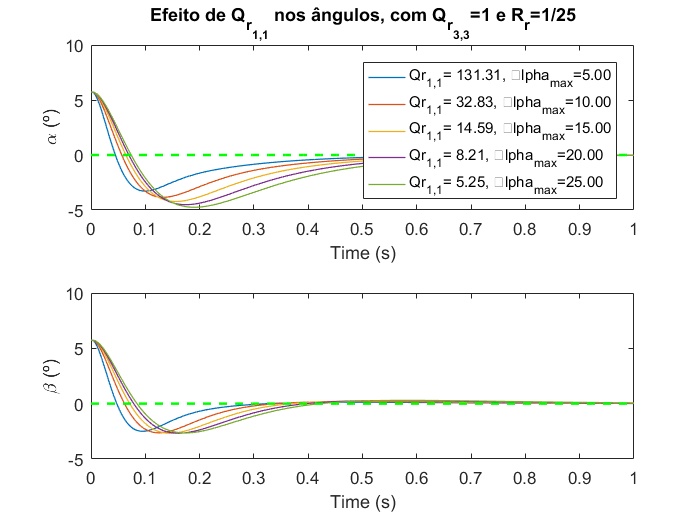
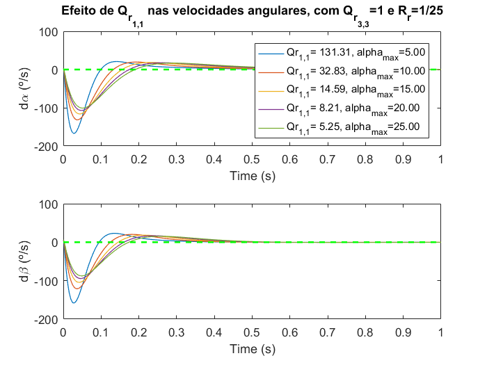
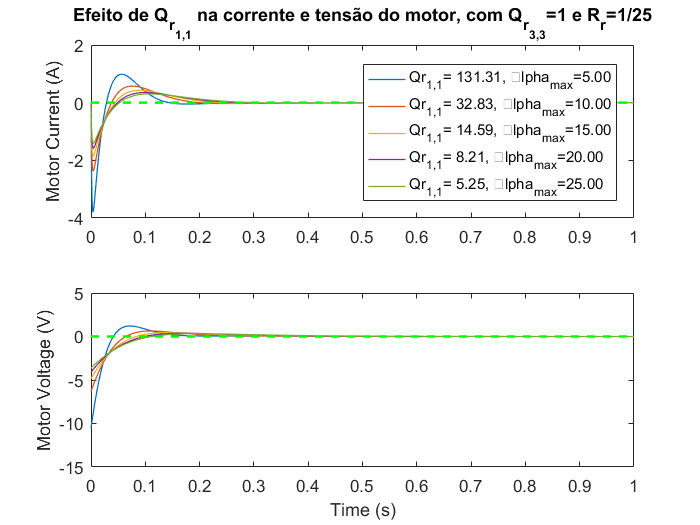
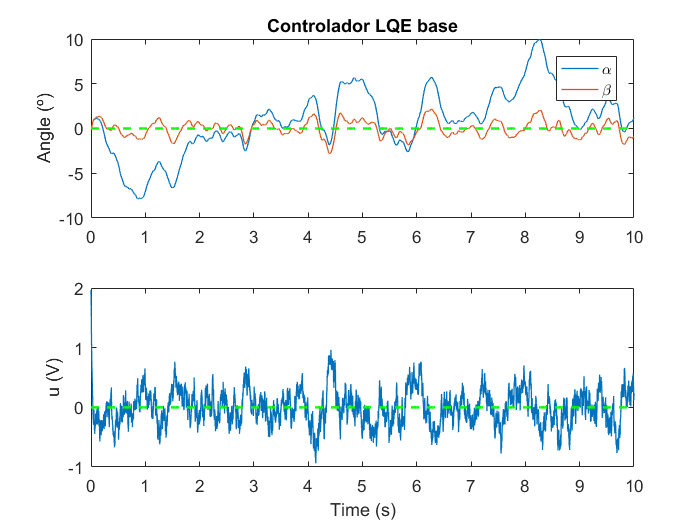
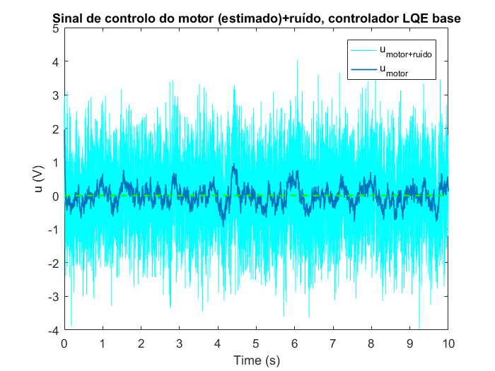
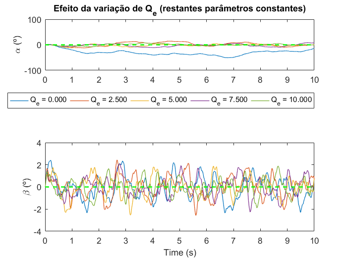
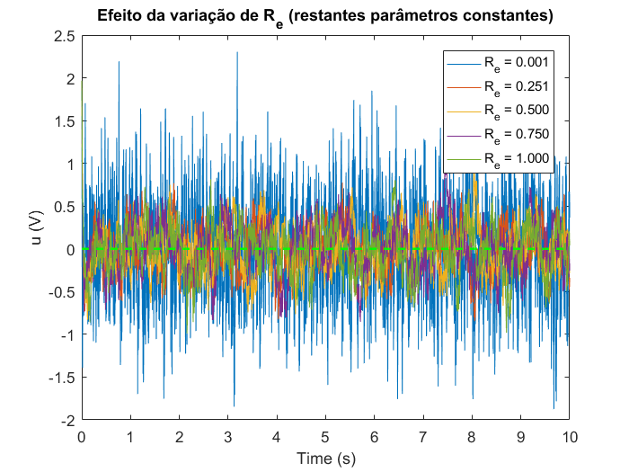
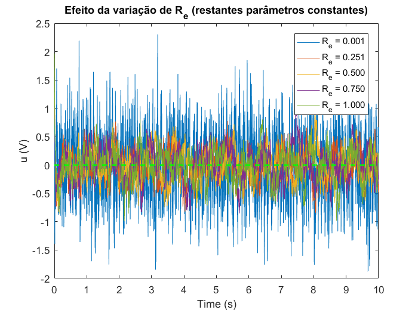

Contents
- CEE Lab script
- Inicialização
- 1
- 2
- 3
- 4
- 5
- CASO INICIAL
- 1º PASSO - EFEITOS DA VARIAÇÃO DE Rr, com Qr constante
- Variação de Qr(1,1), com Qr(3,3)=1 e Rr=1/5^2
- Variação de Qr(3,3), com Qr(1,1)=14.5903 e Rr=1/25
- AGREGADOS OS DADOS
- ver txt do lab1 - respostas e mais perguntas do relatório...
- 7 + 8 - LQE
- INFLUÊNCIA DE G
- INFLUÊNCIA DE Qe
- INFLUÊNCIA DE Re
- Minimização do erro, assumindo parâmetros LQR constantes (1ª grelha)
%%%%%%%%%%%%%%%%%%%%%%%%%%%%%%%%%%%%%%%%%%%%%%%% % Instituto Superior Técnico % % % % Controlo Em Espaço de Estados % % % % Linear State Feedback Control % % Of an Inverted Pendulum % % % % Projeto de Laboratório % % % % Turno B, 5ª-Feira % % Grupo 2 % %%%%%%%%%%%%%%%%%%%%%%%%%%%%%%%%%%%%%%%%%%%%%%%%
CEE Lab script
June2017, João Ribafeita, Rúben Tadeia
Script used in the lab. For defining simulation parameters, please use the file "cee_MACRO.m". For plotting the data obtained in the lab sessions, please use "plotting_script.m".
Inicialização
clear all close all clc;
1
load('fp_lin_matrices_fit3.mat'); %%Load Matrices A, B, C, D % who eigenvalues_A=eig(A) % pólo no spcd, sistema instável em malha aberta...
eigenvalues_A =
0
-737.3184
-19.3673
-5.7612
6.9974
2
Co=ctrb(A,B); rank_a=rank(A) rank_co=rank(Co)
rank_a =
4
rank_co =
5
3
C=[0 0 1 0 0;0 0 0 0 0]; O=obsv(A,C) rank_co=rank(O) C=[1 0 0 0 0;0 0 1 0 0]; O=obsv(A,C) rank_co=rank(O)
O =
1.0e+07 *
0 0 0.0000 0 0
0 0 0 0 0
0 0 0 0.0000 0
0 0 0 0 0
0 -0.0000 0.0000 -0.0000 0.0000
0 0 0 0 0
0 -0.0013 -0.0000 0.0000 -0.0043
0 0 0 0 0
0 1.0068 -0.0273 0.0000 3.2016
0 0 0 0 0
rank_co =
4
O =
1.0e+07 *
0.0000 0 0 0 0
0 0 0.0000 0 0
0 0.0000 0 0 0
0 0 0 0.0000 0
0 -0.0000 0.0000 -0.0000 0.0000
0 -0.0000 0.0000 -0.0000 0.0000
0 -0.0013 -0.0000 0.0000 -0.0043
0 -0.0013 -0.0000 0.0000 -0.0043
0 1.0085 -0.0276 0.0000 3.2067
0 1.0068 -0.0273 0.0000 3.2016
rank_co =
5
4
[num, den]=ss2tf(A,B,C,D); figure(1); bode(num,den)

5
Furuta pendulum - State feedback test
%______________________________________________________________________ load('fp_lin_matrices_fit3.mat'); %%Load Matrices A, B, C, D %vector de condições iniciais, em graus, e respectiva conversão para rad x0_graus = [5.7296 3 5.7296 6 0]; x0c=degtorad(x0_graus)'; %assumindo acesso a todos os estados C=eye(5); %matriz identidade 5x5 D=[0 0 0 0 0]'; T=2; % Time duration of the simulation
CASO INICIAL
Qr = diag([10,0,1,0,0]); %Weight Matrix for x in the integral Rr = 1; %Weight for the input variable K = lqr(A, B, Qr, Rr); %Calculate feedback gain % Simulate controller sim('state_feedback',T); figure(101); subplot(311); plot(t,rad2deg(x(:,1)),'linewidth', 1.5,'DisplayName', '\alpha'); hold all; plot(t,rad2deg(x(:,3)),'linewidth', 1.5,'DisplayName', '\beta'); legend('AutoUpdate','on') plot(t,zeros(length(t),1),'--g','linewidth', 1.5); title('Caso Inicial, Qr=C^T*C, Rr=1'); ylabel('Angle (º)'); subplot(312); plot(t,rad2deg(x(:,2)),'linewidth', 1.5,'DisplayName', 'd\alpha'); hold all; plot(t,rad2deg(x(:,4)),'linewidth', 1.5,'DisplayName', 'd\beta'); legend('AutoUpdate','on') plot(t,zeros(length(t),1),'--g','linewidth', 1.5); ylabel('Angular Speed (º/s)'); subplot(313) yyaxis left; ylabel('u(V)'); hold all; plot(t,u,'linewidth', 1.5); plot(t,zeros(length(t),1),'--m','linewidth', 1.5); yyaxis right; ylabel('i(A)'); xlabel('Time (s)'); hold all; plot(t,x(:,5),'linewidth', 1.5); plot(t,zeros(length(t),1),'--g','linewidth', 1.5); % DATASHEETS % http://www.quanser.com/products/rotary_pendulum % http://www.quanser.com/products/rotary_servo % (DAQ, não igual ao usado, serve de referência) % http://www.quanser.com/products/q2-usb

1º PASSO - EFEITOS DA VARIAÇÃO DE Rr, com Qr constante
Após correr as simulações com estes parâmetros, verifica-se que T=1s é suficiente para que as variáveis de estado atinjam o valor desejado (0) e facilita a visualização dos gráficos.
T=0:0.001:1; vec_rr= linspace(4, 6, 5); % u_{max}^2 allowed (interval) Qr = diag([10,0,1,0,0]); %Weight Matrix for x in the integral for i=1:length(vec_rr) Rr = 1/vec_rr(i)^2; %Weight for the input variable K = lqr(A, B, Qr, Rr); %Calculate feedback gain sim('state_feedback',T); figure(111); subplot(2,1,1); plot(t,rad2deg(x(:,1)),'linewidth', 0.75,'DisplayName',... sprintf('Rr = %.3f, u_{max}=%.2f V', 1/vec_rr(i)^2,vec_rr(i))); legend('AutoUpdate','on') hold all; subplot(2,1,2); plot(t,rad2deg(x(:,3)),'linewidth', 0.75,'DisplayName',... sprintf('Rr = %.3f, u_{max}=%.2f V', 1/vec_rr(i)^2,vec_rr(i))); legend('AutoUpdate','on') hold all; figure(112); subplot(2,1,1); plot(t,rad2deg(x(:,2)),'linewidth', 0.75,'DisplayName',... sprintf('Rr = %.3f, u_{max}=%.2f V', 1/vec_rr(i)^2,vec_rr(i))); legend('AutoUpdate','on') hold all; subplot(2,1,2); plot(t,rad2deg(x(:,4)),'linewidth', 0.75,'DisplayName',... sprintf('Rr = %.3f, u_{max}=%.2f V', 1/vec_rr(i)^2,vec_rr(i))); legend('AutoUpdate','on') hold all; figure(113); subplot(2,1,1); plot(t,x(:,5),'linewidth', 0.75,'DisplayName',... sprintf('Rr = %.3f, u_{max}=%.2f V', 1/vec_rr(i)^2,vec_rr(i))); hold all; legend('AutoUpdate','on') subplot(2,1,2); plot(t,u,'linewidth', 0.75); hold all; i=i+1; end figure(111); subplot(2,1,1); plot(t,zeros(length(t),1),'--g','linewidth', 1.5); title('Efeito de R_r nos ângulos, com Q_{r_{1,1}}=10 e Q_{r_{3,3}}=1'); xlabel('Time (s)'); ylabel('\alpha (º)'); subplot(2,1,2); plot(t,zeros(length(t),1),'--g','linewidth', 1.5); xlabel('Time (s)'); ylabel('\beta (º)'); figure(112); subplot(2,1,1); plot(t,zeros(length(t),1),'--g','linewidth', 1.5); title('Efeito de R_r nas velocidades angulares, com Q_{r_{1,1}}=10 e Q_{r_{3,3}}=1'); xlabel('Time (s)'); ylabel('d\alpha (º/s)'); subplot(2,1,2); plot(t,zeros(length(t),1),'--g','linewidth', 1.5); xlabel('Time (s)'); ylabel('d\beta (º/s)'); figure(113); subplot(2,1,1); plot(t,zeros(length(t),1),'--g','linewidth', 1.5); title('Efeito de Rr na corrente e tensão do motor, com Q_{r_{1,1}}=10 e Q_{r_{3,3}}=1'); ylabel('Motor Current (A)'); subplot(2,1,2); plot(t,zeros(length(t),1),'--g','linewidth', 1.5); xlabel('Time (s)'); ylabel('Motor Voltage(V)'); % com o aumento de rr, diminui a corrente e tensão do motor (diminui o % custo do controlo) % no entanto, reduz a velocidade de resposta do sistema às perturbações % (neste caso provocadas pelos valores das condições iniciais) % adoptaram-se valores de Rr=1/umax^2


Variação de Qr(1,1), com Qr(3,3)=1 e Rr=1/5^2
T=0:0.001:1; valores_maximos_graus=linspace(5, 25, 5); vec_pesos=degtorad(valores_maximos_graus); %vector de "pesos" a experimentar Rr = 1/5^2; %Weight for the input variable for i=1:length(vec_pesos) Qr = diag([1/(vec_pesos(i)^2),0,1,0,0]); %Weight Matrix for x in the integral K = lqr(A, B, Qr, Rr); %Calculate feedback gain % Simulate controller sim('state_feedback',T); figure(121); subplot(2,1,1); plot(t,rad2deg(x(:,1)),'linewidth', 0.75,'DisplayName',... sprintf('Qr_{1,1}= %.2f, \alpha_{max}=%.2f', 1/(vec_pesos(i)^2),... valores_maximos_graus(i))); legend('AutoUpdate','on') hold all; subplot(2,1,2); plot(t,rad2deg(x(:,3)),'linewidth', 0.75); hold all; figure(122); subplot(2,1,1); plot(t,rad2deg(x(:,2)),'linewidth', 0.75,'DisplayName',... sprintf('Qr_{1,1}= %.2f, alpha_{max}=%.2f', 1/(vec_pesos(i)^2),... valores_maximos_graus(i))); legend('AutoUpdate','on','Location', 'southeast') hold all; subplot(2,1,2); plot(t,rad2deg(x(:,4)),'linewidth', 0.75); hold all; figure(123); subplot(2,1,1); plot(t,x(:,5),'linewidth', 0.75,'DisplayName',... sprintf('Qr_{1,1}= %.2f, \alpha_{max}=%.2f', 1/(vec_pesos(i)^2),... valores_maximos_graus(i))); hold all; legend('AutoUpdate','on','Location', 'southeast') subplot(2,1,2); plot(t,u,'linewidth', 0.75); hold all; i=i+1; end figure(121); subplot(2,1,1); plot(t,zeros(length(t),1),'--g','linewidth', 1.5); title('Efeito de Q_{r_{1,1}} nos ângulos, com Q_{r_{3,3}}=1 e R_r=1/25'); xlabel('Time (s)'); ylabel('\alpha (º)'); subplot(2,1,2); plot(t,zeros(length(t),1),'--g','linewidth', 1.5); xlabel('Time (s)'); ylabel('\beta (º)'); figure(122); subplot(2,1,1); plot(t,zeros(length(t),1),'--g','linewidth', 1.5); title('Efeito de Q_{r_{1,1}} nas velocidades angulares, com Q_{r_{3,3}}=1 e R_r=1/25'); xlabel('Time (s)'); ylabel('d\alpha (º/s)'); subplot(2,1,2); plot(t,zeros(length(t),1),'--g','linewidth', 1.5); xlabel('Time (s)'); ylabel('d\beta (º/s)'); figure(123); subplot(2,1,1); plot(t,zeros(length(t),1),'--g','linewidth', 1.5); title('Efeito de Q_{r_{1,1}} na corrente e tensão do motor, com Q_{r_{3,3}}=1 e R_r=1/25'); ylabel('Motor Current (A)'); subplot(2,1,2); plot(t,zeros(length(t),1),'--g','linewidth', 1.5); xlabel('Time (s)'); ylabel('Motor Voltage (V)');  
Variação de Qr(3,3), com Qr(1,1)=14.5903 e Rr=1/25
T=0:0.001:1; valores_maximos_graus=linspace(1, 10, 10); vec_rr=degtorad(valores_maximos_graus); %vector de "pesos" a experimentar Rr = 1/25; %Weight for the input variable for i=1:length(vec_rr); Qr = diag([1/(degtorad(15)^2), 0,1/(vec_rr(i)^2),0,0]); %Weight Matrix for x in the integral K = lqr(A, B, Qr, Rr); %Calculate feedback gain sim('state_feedback',T); figure(131); subplot(2,1,1); plot(t,rad2deg(x(:,1)),'linewidth', 0.75,'DisplayName',... sprintf('Qr_{3,3}= %.2f, beta_{max}=%.2f', 1/vec_rr(i)^2,... valores_maximos_graus(i))); legend('AutoUpdate','on','Location', 'bestoutside') hold all; subplot(2,1,2); plot(t,rad2deg(x(:,3)),'linewidth', 0.75); hold all; figure(132); subplot(2,1,1); plot(t,rad2deg(x(:,2)),'linewidth', 0.75,'DisplayName',... sprintf('Qr_{3,3}= %.2f, beta_{max}=%.2f', 1/vec_rr(i)^2,... valores_maximos_graus(i))); legend('AutoUpdate','on') hold all; subplot(2,1,2); plot(t,rad2deg(x(:,4)),'linewidth', 0.75); hold all; figure(133); subplot(2,1,1); plot(t,x(:,5),'linewidth', 0.75,'DisplayName',... sprintf('Qr_{3,3}= %.2f, beta_{max}=%.2f', 1/vec_rr(i)^2,... valores_maximos_graus(i))); hold all; legend('AutoUpdate','on') subplot(2,1,2); plot(t,u,'linewidth', 0.75); hold all; i=i+1; end figure(131); subplot(2,1,1); plot(t,zeros(length(t),1),'--g','linewidth', 1.5); title('Efeito de Q_{r_{3,3}} nos ângulos, com Q_{r_{1,1}}=14.5903 e R_r=1/25'); xlabel('Time (s)'); ylabel('\alpha (º)'); subplot(2,1,2); plot(t,zeros(length(t),1),'--g','linewidth', 1.5); xlabel('Time (s)'); ylabel('\beta (º)'); figure(132); subplot(2,1,1); plot(t,zeros(length(t),1),'--g','linewidth', 1.5); title('Efeito de Q_{r_{3,3}} nas velocidades angulares, com Q_{r_{1,1}}=14.5903 e R_r=1'); xlabel('Time (s)'); ylabel('d\alpha (º/s)'); subplot(2,1,2); plot(t,zeros(length(t),1),'--g','linewidth', 1.5); xlabel('Time (s)'); ylabel('d\beta (º/s)'); figure(133); subplot(2,1,1); plot(t,zeros(length(t),1),'--g','linewidth', 1.5); title('Efeito de Q_{r_{3,3}} na corrente e tensão do motor, com Q_{r_{1,1}}=14.5903 e R_r=1/25'); ylabel('Motor Current (A)'); subplot(2,1,2); plot(t,zeros(length(t),1),'--g','linewidth', 1.5); xlabel('Time (s)'); ylabel('Motor Voltage (V)');


AGREGADOS OS DADOS
x0_graus = [5.7296 3 5.7296 6 0]; x0=degtorad(x0_graus)'; x0c=degtorad(x0_graus)'; C=eye(5); %matriz identidade 5x5 D=[0 0 0 0 0]'; T=0:0.001:2; % Time duration of the simulation Qr = diag([14.5903,0,364.7563,0,0]); %Weight Matrix for x in the integral Rr = 0.04; %Weight for the input variable K = lqr(A, B, Qr, Rr); %Calculate feedback gain sim('state_feedback',T); figure(141); subplot(311); plot(t,rad2deg(x(:,1)),'linewidth', 1.5,'DisplayName', '\alpha'); hold all; plot(t,rad2deg(x(:,3)),'linewidth', 1.5,'DisplayName', '\beta'); ylabel('Angle (º)'); legend('AutoUpdate','on') plot(t,zeros(length(t),1), '--g','linewidth', 1.5); subplot(312); plot(t,rad2deg(x(:,2)),'linewidth', 1.5,'DisplayName', 'd\alpha'); hold all; plot(t,rad2deg(x(:,4)),'linewidth', 1.5,'DisplayName', 'd\beta'); ylabel('Angular Speed (º/s)'); legend('AutoUpdate','on') plot(t,zeros(length(t),1), '--g','linewidth', 1.5); subplot(313); yyaxis left hold all; ylabel('i (A)'); xlabel('Time (s)'); plot(t,x(:,5),'linewidth', 1.5); yyaxis right plot(t,u,'linewidth', 1.5, 'DisplayName','u (V)'); hold all; plot(t,zeros(length(t),1), '--g','linewidth', 1.5,'DisplayName', '0'); ylabel('u (V)');

ver txt do lab1 - respostas e mais perguntas do relatório...
[A3,~,~,~]=linmod('state_feedback');
closed_loop_poles=eig(A3)
poles=eig(A-B*K);
numero_polos=size(poles,1);
closed_loop_poles = 1.0e+02 * -7.3733 + 0.0000i -0.3712 + 0.3401i -0.3712 - 0.3401i -0.0225 + 0.0184i -0.0225 - 0.0184i
7 + 8 - LQE
T=2; C=[1 0 0 0 0;0 0 1 0 0]; x0_graus = [5.7296 3 5.7296 6 0]; x0=degtorad(x0_graus)'; x0c=degtorad(x0_graus)'; Qr = diag([14.5903,0,364.7563,0,0]); %Weight Matrix for x in the integral Rr = 0.04; %Weight for the input variable K = lqr(A, B, Qr, Rr); %Calculate feedback gain G = 1*eye(size(A)); %Gain of the process noise Qe = 1*eye(size(A))*10; %Variance of process errors Re = 1*eye(2); %Variance of measurement errors L = lqe(A, G, C, Qe, Re); %Calculate estimator gains poles_observer=eig(A-L*C); % 8 Ac=A-B*K-L*C; C=[1 0 0 0 0;0 0 1 0 0]; Bc=L; Cc=-K; Dc=[0 0]; D=[0;0]; x0c_graus =[5.9 0 0 0 0];% [5.7296 0 7 0 0]; x0c=deg2rad(x0c_graus)'; x0=[0 0 0 0 0]; perturbacao_alpha=0; %allows simulink to enable/disable disturbances perturbacao_beta=0; %allows simulink to enable/disable disturbances T=0:0.001:10; sim('controller_observer2',T); figure(151); subplot(211) plot(t,rad2deg(y(:,1)),'linewidth', 0.75,'DisplayName', '\alpha'); hold all; plot(t,rad2deg(y(:,2)),'linewidth', 0.75,'DisplayName', '\beta'); title('Controlador LQE base'); %INSERIR TÍTULO... ylabel('Angle (º)'); legend('AutoUpdate','on') plot(t,zeros(length(t),1), '--g','linewidth', 1.5); subplot(212) plot(t,u,'linewidth', 0.75) hold all; ylabel('u (V)'); % ylim([-5 5]); xlabel('Time (s)'); plot(t,zeros(length(t),1), '--g','linewidth', 1.5); figure(152) plot(t,u_ruido,'-c','linewidth', 0.2,'DisplayName', 'u_{motor+ruído}'); hold all; plot(t,u,'linewidth', 1,'DisplayName', 'u_{motor}'); legend('AutoUpdate','on') plot(t,zeros(length(t),1), '--g','linewidth', 1.5);%,'DisplayName', '0'); title('Sinal de controlo do motor (estimado)+ruído, controlador LQE base'); % ylim([-5 5]); ylabel('u (V)'); xlabel('Time (s)'); figure(153); subplot(2,1,1); plot(t,rad2deg(alpha_ruido), '-c','linewidth', 0.2,'DisplayName',... '\alpha+ruído'); hold all; plot(t,rad2deg(y(:,1)),'linewidth', 1,'DisplayName', '\alpha') legend('AutoUpdate','on') plot(t,zeros(length(t),1), '--g','linewidth', 1.5,'DisplayName', '0'); subplot(2,1,2); plot(t,rad2deg(beta_ruido),'-c','linewidth', 0.2,'DisplayName',... '\beta+ruído'); hold all; plot(t,rad2deg(y(:,2)),'-r','linewidth', 1,'DisplayName', '\beta'); legend('AutoUpdate','on') plot(t,zeros(length(t),1), '--g','linewidth', 1.5,'DisplayName', '0'); xlabel('Time (s)'); ylabel('Angle (º)'); subplot(2,1,1); title('Resposta do sistema, controlador LQE base'); %??????? ylabel('Angle (º)'); 

INFLUÊNCIA DE G
T=0:0.001:10; perturbacao_alpha=0; %allows simulink to enable/disable disturbances perturbacao_beta=0; %allows simulink to enable/disable disturbances vec_G=linspace(0,1,5); %vector de "pesos" a experimentar erro_alpha=zeros(length(vec_G),1); erro_beta=zeros(length(vec_G),1); Qe = 1*eye(size(A))*10; %Variance of process errors Re = 1*eye(2); %Variance of measurement errors for i=1:length(vec_G); G = vec_G(i)*eye(size(A)); %Gain of the process noise L = lqe(A, G, C, Qe, Re); % Calculate estimator gains Ac=A-B*K-L*C; Bc=L; sim('controller_observer2',T); erro_alpha (i)=immse(zeros(length(t),1),rad2deg(y(:,1))); erro_beta (i)=immse(zeros(length(t),1),rad2deg(y(:,2))); figure(161); subplot(211) plot(t,rad2deg(y(:,1)),'linewidth', 0.75,'DisplayName',... sprintf('G = %.3f', vec_G(i))); hold all; subplot(212) plot(t,rad2deg(y(:,2)),'linewidth', 0.75,'DisplayName',... sprintf('G = %.3f', vec_G(i))); hold all; figure(162) plot(t,u,'linewidth',0.5,'DisplayName',sprintf('G = %.3f', vec_G(i))) hold all; end % figure(161); subplot(2,1,1); legend('AutoUpdate','on','location','southoutside','orientation','horizontal') plot(t,zeros(length(t),1),'--g','linewidth', 1.5); title('Efeito da variação de G (restantes parâmetros constantes)'); ylabel('\alpha (º)'); subplot(2,1,2); plot(t,zeros(length(t),1),'--g','linewidth', 1.5); xlabel('Time (s)'); ylabel('\beta (º)'); figure(162); legend('AutoUpdate','on') plot(t,zeros(length(t),1),'--g','linewidth', 1.5); title('Efeito da variação de G (restantes parâmetros constantes)'); xlabel('Time (s)'); ylabel('u (V)'); % Value that minimises error [min_alpha, index1]=min(erro_alpha); [min_beta, index2]=min(erro_beta); fprintf('O valor de G que minimiza o erro de alpha é %.3f, que corresponde a um erro de %.3f\n',... vec_G(index1),min_alpha); fprintf('O valor de G que minimiza o erro de beta é %.3f, que corresponde a um erro de %.3f\n',... vec_G(index2),min_beta);
O valor de G que minimiza o erro de alpha é 1.000, que corresponde a um erro de 10.653 O valor de G que minimiza o erro de beta é 1.000, que corresponde a um erro de 0.512


INFLUÊNCIA DE Qe
T=0:0.001:10; perturbacao_alpha=0; %allows simulink to enable/disable disturbances perturbacao_beta=0; %allows simulink to enable/disable disturbances vec_Q=linspace(0,1,5); %vector de "pesos" a experimentar erro_alpha=zeros(length(vec_Q),1); erro_beta=zeros(length(vec_Q),1); G = 1*eye(size(A)); %Gain of the process noise Re = 1*eye(2); %Variance of measurement errors for i=1:length(vec_Q); Qe = vec_Q(i)*eye(size(A))*10; %Variance of process errors L = lqe(A, G, C, Qe, Re); % Calculate estimator gains Ac=A-B*K-L*C; Bc=L; sim('controller_observer2',T); erro_alpha (i)=immse(zeros(length(t),1),rad2deg(y(:,1))); erro_beta (i)=immse(zeros(length(t),1),rad2deg(y(:,2))); figure(171); subplot(211) plot(t,rad2deg(y(:,1)),'linewidth', 0.75,'DisplayName',... sprintf('Q_e = %.3f', vec_Q(i)*10)); hold all; subplot(212) plot(t,rad2deg(y(:,2)),'linewidth', 0.75,'DisplayName',... sprintf('Q_e = %.3f', vec_Q(i)*10)); hold all; figure(172) plot(t,u,'linewidth',0.5,'DisplayName',sprintf('Q_e = %.3f', vec_Q(i)*10)) hold all; end % figure(171); subplot(2,1,1); legend('AutoUpdate','on','location','southoutside','orientation','horizontal') plot(t,zeros(length(t),1),'--g','linewidth', 1.5); title('Efeito da variação de Q_e (restantes parâmetros constantes)'); ylabel('\alpha (º)'); subplot(2,1,2); plot(t,zeros(length(t),1),'--g','linewidth', 1.5); xlabel('Time (s)'); ylabel('\beta (º)'); figure(172); legend('AutoUpdate','on') plot(t,zeros(length(t),1),'--g','linewidth', 1.5); title('Efeito da variação de Q_e (restantes parâmetros constantes)'); xlabel('Time (s)'); ylabel('u (V)'); % Value that minimises error [min_alpha, index1]=min(erro_alpha); [min_beta, index2]=min(erro_beta); fprintf('O valor de Q_e que minimiza o erro de alpha é %.3f, que corresponde a um erro de %.3f\n',... vec_Q(index1)*10,min_alpha); fprintf('O valor de Q_e que minimiza o erro de beta é %.3f, que corresponde a um erro de %.3f\n',... vec_Q(index2)*10,min_beta);
O valor de Q_e que minimiza o erro de alpha é 10.000, que corresponde a um erro de 12.022 O valor de Q_e que minimiza o erro de beta é 10.000, que corresponde a um erro de 0.542

INFLUÊNCIA DE Re
T=0:0.001:10; perturbacao_alpha=0; %allows simulink to enable/disable disturbances perturbacao_beta=0; %allows simulink to enable/disable disturbances vec_R=linspace(0.001,1,5); %vector de "pesos" a experimentar erro_alpha=zeros(length(vec_R),1); erro_beta=zeros(length(vec_R),1); G = 1*eye(size(A)); %Gain of the process noise Qe = 1*eye(size(A))*10; %Variance of process errors for i=1:length(vec_Q); Re = vec_R(i)*eye(2); %Variance of measurement errors L = lqe(A, G, C, Qe, Re); % Calculate estimator gains Ac=A-B*K-L*C; Bc=L; sim('controller_observer2',T); erro_alpha (i)=immse(zeros(length(t),1),rad2deg(y(:,1))); erro_beta (i)=immse(zeros(length(t),1),rad2deg(y(:,2))); figure(181); subplot(211) plot(t,rad2deg(y(:,1)),'linewidth', 0.75,'DisplayName',... sprintf('R_e = %.3f', vec_R(i))); hold all; subplot(212) plot(t,rad2deg(y(:,2)),'linewidth', 0.75,'DisplayName',... sprintf('R_e = %.3f', vec_R(i))); hold all; figure(182) plot(t,u,'linewidth',0.5,'DisplayName',sprintf('R_e = %.3f', vec_R(i))) hold all; end % figure(181); subplot(2,1,1); legend('AutoUpdate','on','location','southoutside','orientation','horizontal') plot(t,zeros(length(t),1),'--g','linewidth', 1.5); title('Efeito da variação de R_e (restantes parâmetros constantes)'); ylabel('\alpha (º)'); subplot(2,1,2); plot(t,zeros(length(t),1),'--g','linewidth', 1.5); xlabel('Time (s)'); ylabel('\beta (º)'); figure(182); legend('AutoUpdate','on') plot(t,zeros(length(t),1),'--g','linewidth', 1.5); title('Efeito da variação de R_e (restantes parâmetros constantes)'); xlabel('Time (s)'); ylabel('u (V)'); % Value that minimises error [min_alpha, index1]=min(erro_alpha); [min_beta, index2]=min(erro_beta); fprintf('O valor de R_e que minimiza o erro de alpha é %.3f, que corresponde a um erro de %.3f\n',... vec_R(index1),min_alpha); fprintf('O valor de R_e que minimiza o erro de beta é %.3f, que corresponde a um erro de %.3f\n',... vec_R(index2),min_beta);
O valor de R_e que minimiza o erro de alpha é 0.001, que corresponde a um erro de 1.538 O valor de R_e que minimiza o erro de beta é 0.001, que corresponde a um erro de 0.146
 
 Minimização do erro, assumindo parâmetros LQR constantes (1ª grelha)
C=[1 0 0 0 0;0 0 1 0 0]; Qr = diag([14.5903,0,364.7563,0,0]); %Weight Matrix for x in the integral Rr = 0.04; %Weight for the input variable K = lqr(A, B, Qr, Rr); %Calculate feedback gain T=10; vec_G=linspace(0.01,1,20); vec_Q=linspace(0.001,1,20); vec_R=linspace(0.0001,0.0015,10); erro_alpha=zeros(length(vec_G), length(vec_Q), length(vec_R)); erro_beta=zeros(length(vec_G), length(vec_Q), length(vec_R)); l=waitbar(1/length(vec_G),'Calculating impact of G... Please Wait'); for i=1:length(vec_G) waitbar(i/length(vec_G)); G = vec_G(i)*eye(size(A)); %Gain of the process noise m=waitbar(1/length(vec_Q),'Calculating impact of Qe... Please Wait'); for j=1:length(vec_Q) waitbar(j/length(vec_Q)); Qe = vec_Q(j)*eye(size(A))*10; %Variance of process errors n=waitbar(1/length(vec_R),'Calculating impact of Re... Please Wait'); for k=1:length(vec_R) waitbar(k/length(vec_R)); Re = vec_R(k)*eye(2); %Variance of measurement errors L = lqe(A, G, C, Qe, Re); % Calculate estimator gains Ac=A-B*K-L*C; Bc=L; sim('controller_observer2',T); erro_alpha (i,j,k)=immse(zeros(length(t),1),rad2deg(y(:,1))); erro_beta (i,j,k)=immse(zeros(length(t),1),rad2deg(y(:,2))); k=k+1; end j=j+1; delete(n) end i=i+1; delete(m) end delete(l) %finding the values that minimise error

%for alpha [Min3,c3] = min(erro_alpha, [], 3); [Min2,c2] = min(Min3, [], 2); [Min1,c1] = min(Min2, [], 1); c1; c2=c2(c1); c3=c3(c1,c2); erro_alpha(c1,c2,c3); fprintf('Os valores que minimizam o erro de alpha são:\n'); fprintf('G=%.3f, Q_e=%.3f, R_e=%.5f --> erro alpha=%.4f\n',vec_G(c1),vec_Q(c2),... vec_R(c3),erro_alpha(c1,c2,c3)); fprintf(' --> erro beta=%.4f\n',erro_beta(c1,c2,c3)); %for beta [Min3,c3] = min(erro_beta, [], 3); [Min2,c2] = min(Min3, [], 2); [Min1,c1] = min(Min2, [], 1); c1; c2=c2(c1); c3=c3(c1,c2); erro_beta(c1,c2,c3); fprintf('\n'); fprintf('Os valores que minimizam o erro de beta são:\n'); fprintf('G=%.3f, Q_e=%.3f, R_e=%.5f --> erro beta=%.4f\n',vec_G(c1),vec_Q(c2)*10,... vec_R(c3),erro_beta(c1,c2,c3)); fprintf(' --> erro alpha=%.4f\n\n',erro_alpha(c1,c2,c3));
Os valores que minimizam o erro de alpha são:
G=0.687, Q_e=0.842, R_e=0.00041 --> erro alpha=0.6802
--> erro beta=0.1236
Os valores que minimizam o erro de beta são:
G=0.948, Q_e=5.794, R_e=0.00010 --> erro beta=0.0978
--> erro alpha=1.2215
2ª iteração
vec_G=linspace(0.94,1,20); vec_Q=linspace(0.09,0.1,20); vec_R=linspace(0.0002,0.0008,10); erro_alpha=zeros(length(vec_G), length(vec_Q), length(vec_R)); erro_beta=zeros(length(vec_G), length(vec_Q), length(vec_R)); l=waitbar(1/length(vec_G),'Calculating impact of G... Please Wait'); for i=1:length(vec_G) waitbar(i/length(vec_G)); G = vec_G(i)*eye(size(A)); %Gain of the process noise m=waitbar(1/length(vec_Q),'Calculating impact of Qe... Please Wait'); for j=1:length(vec_Q) waitbar(j/length(vec_Q)); Qe = vec_Q(j)*eye(size(A))*10; %Variance of process errors n=waitbar(1/length(vec_R),'Calculating impact of Re... Please Wait'); for k=1:length(vec_R) waitbar(k/length(vec_R)); Re = vec_R(k)*eye(2); %Variance of measurement errors L = lqe(A, G, C, Qe, Re); % Calculate estimator gains Ac=A-B*K-L*C; Bc=L; sim('controller_observer2',T); erro_alpha (i,j,k)=immse(zeros(length(t),1),rad2deg(y(:,1))); erro_beta (i,j,k)=immse(zeros(length(t),1),rad2deg(y(:,2))); k=k+1; end j=j+1; delete(n) end i=i+1; delete(m) end delete(l) %finding the values that minimise error
%for alpha [Min3,c3] = min(erro_alpha, [], 3); [Min2,c2] = min(Min3, [], 2); [Min1,c1] = min(Min2, [], 1); c1; c2=c2(c1); c3=c3(c1,c2); erro_alpha(c1,c2,c3); fprintf('Os valores que minimizam o erro de alpha são:\n'); fprintf('G=%.3f, Q_e=%.3f, R_e=%.5f --> erro alpha=%.4f\n',vec_G(c1),vec_Q(c2),... vec_R(c3),erro_alpha(c1,c2,c3)); fprintf(' --> erro beta=%.4f\n',erro_beta(c1,c2,c3)); %for beta [Min3,c3] = min(erro_beta, [], 3); [Min2,c2] = min(Min3, [], 2); [Min1,c1] = min(Min2, [], 1); c1; c2=c2(c1); c3=c3(c1,c2); erro_beta(c1,c2,c3); fprintf('\n'); fprintf('Os valores que minimizam o erro de beta são:\n'); fprintf('G=%.3f, Q_e=%.3f, R_e=%.5f --> erro beta=%.4f\n',vec_G(c1),vec_Q(c2)*10,... vec_R(c3),erro_beta(c1,c2,c3)); fprintf(' --> erro alpha=%.4f\n\n',erro_alpha(c1,c2,c3));
Os valores que minimizam o erro de alpha são:
G=0.953, Q_e=0.099, R_e=0.00027 --> erro alpha=0.7182
--> erro beta=0.1282
Os valores que minimizam o erro de beta são:
G=0.953, Q_e=0.989, R_e=0.00027 --> erro beta=0.1282
--> erro alpha=0.7182